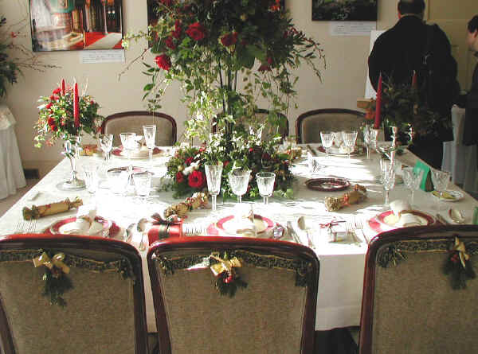

| 見たい項目をクリックして下さい | |||||||||
|
| 行 事 記 録 （詳 細 - １９） |
|
山手クリスマスツアー 横浜探訪の会
|
| 掲載日 ０４−１−１２ |
|
行 事 名 |
山手クリスマスツアー |
|
研 究 部 会 |
横浜探訪の会 |
|
実 施 日 |
０３年１２月２１日（日） |
|
実 施 場 所 |
ＪＲ石川町駅より山手イタリア山庭園、元町公園、港の見える丘公園を巡る |
|
参 加 者 |
１１名 会員９名 （石田、小方、小野寺、清水、須田、竹内、坪井、福野、堀、） 会員外２名 |
| 記 録 | 竹内 裕子 |
|
概 要 |
ＪＲ石川町駅→ブラフ18番館→外交官の家→ベーリックホール→エリスマン邸→ |
| 山手クリスマスツアー 石田 一郎 | |||||||||||||||||||||||||||
| 参加者全員、ＪＲ石川駅元町口に１０時集合、須田会員のガイドで、ブラフ１８番館、外交官の家、ベーリックホール、エリスマン邸、山手２３４番館、イギリス館、山手１１１館と巡り、それぞれのクリスマスに関わる逸話や飾り付けについて説明を受け、午後１時過ぎ中華街で昼食、１時５０分解散と順調に推移して終了しました。 雲一つない快晴で最高の散策日和で、大丸谷坂や山手本通りを歩くのも非常に気持ちが良く、所々で聞いた、関東大震災で亡くなられた２７名の方を祭る道路脇のお堂、イタリア様式庭園、ブラフ積石垣、山手女子高、フエリス女学院大学、山手教会とそのマリヤ像や司教舎、山手聖公会、外人墓地、ミュージアム岩崎、スペイン様式庭園などについての須田さんの説明は極めて判りやすく楽しい３時間でした。 各洋館の飾り付けは、ブラフ１８番館はアイスランドの国旗の色赤・白・青をメインカラーとしてディスプレイ、外交官の家は花の国フランスのクリスマス、特に食卓には大きな花輪をあしらう斬新な飾り、ベーリックホールはカナダで森の国のクリスマスを特に食卓には立体感あるカットグラスの食器を配し冷たさを表現、エリスマン邸はオーストリアで音楽の都のクリスマス、山手２３４番館はアルゼンチンで南半球の夏のクリスマス、イギリス館は一時代前の伝統的英国のクリスマス、そして山手１１１番館はギリシャで海のクリスマス、と何れもそれぞれの飾り付けにお国柄を示す工夫が見られ興味深く印象的でした。
|
|
||||||||||||||||||||||||||
|  | |||||||||||||||||||||||||||
| イギリス | |||||||||||||||||||||||||||
| 記録の一覧表 に戻る |